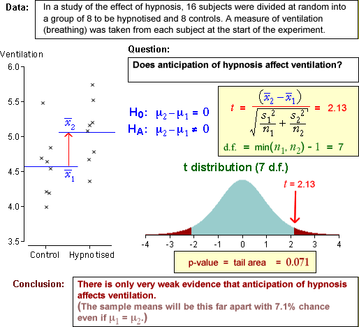

Are two population means equal?

This page gives examples showing how to evaluate the p-value for testing whether two population means are equal. It also describes the conclusions that should be reached from the tests.
The data sets are described in the questions.